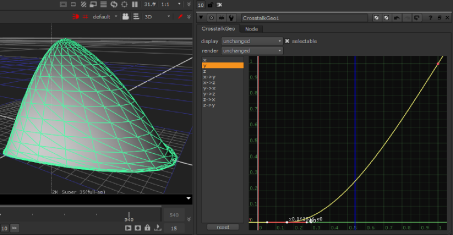

的 CrosstalkGeo 和 LookupGeo 节点为您提供对每个顶点 x 、 y 和 z 值的直接全局控制。例如，您可以只修改所有 y 值，而不接触 x 和 z 值。
通过在查找表 (LUTs) 中修改其关联的 2D 曲线，可以更改不同的顶点值 (x 、 y 或 z)。LUT 中的 x 轴表示当前顶点值，y 轴表示新顶点值。
默认情况下，曲线是一条对角线，其中曲线中的所有点在 y 轴上具有相同的值 (新值) 就像他们在 x轴上做的那样 (当前值)。因为 x 和 y 值相同，所以对象的形状没有变化。
通过修改，例如，CrosstalkGeo 节点的 y 通过以下方式，您可以将球体的一些顶点 y 值设置为 0 以挤压其下半部分:
|
 |
|
修改 CrosstalkGeo 节点的 LUT。 |
使用 CrosstalkGeo 节点，还可以使用顶点 x 、 y 和 z 的一个值来计算查找曲线，然后将结果添加到另一个顶点值。例如，您可以修改 x-> y 曲线，使用顶点 x 值找到曲线上的新值，然后将其添加到顶点 y 值。这样，您可以通过另一个通道调整 y 值。
默认情况下，这些曲线是 y = 0 的水平线。它们不会产生变化，因为添加到顶点的值 (y 轴上的新值) 为 0。
| 1。 | 选择 3D > 修改 > CrosstalkGeo 或 LookupGeo 在要修改的 3D 对象之后的任何位置插入 CrosstalkGeo 或 LookupGeo 节点。 |
| 2. | 将查看器附加到节点以查看您的更改。 |
| 3. | 在节点的控件中，使用 显示 下拉菜单，选择在对对象进行更改时在查看器中查看对象的方式。 |
| 4. | 从左侧的列表中，选择要修改的曲线。例如，您可以选择 z 仅修改顶点 z 值。 |
在 CrosstalkGeo 节点的情况下，您也可以选择 Y-> x 例如，使用顶点 y 值计算曲线并将结果添加到顶点 x 值。
| 5. | 根据需要调整曲线。要在曲线上插入点, Ctrl/Cmd + Alt + 点击曲线。 |
|
|